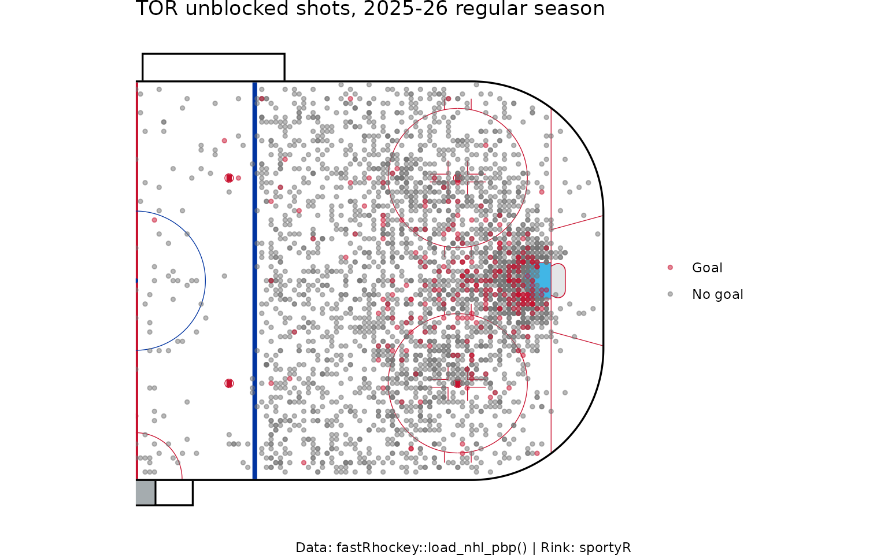
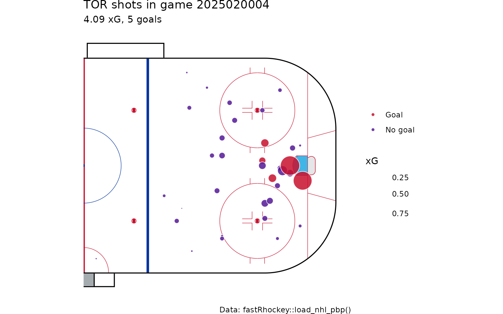
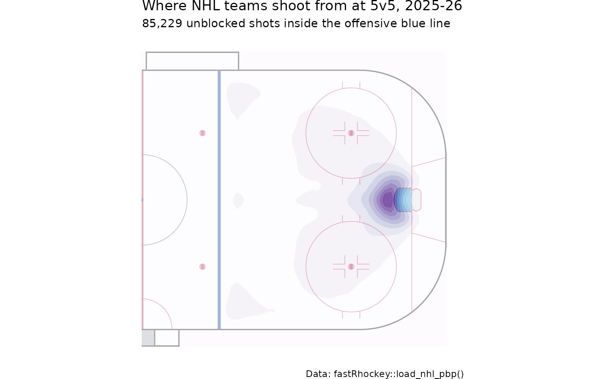
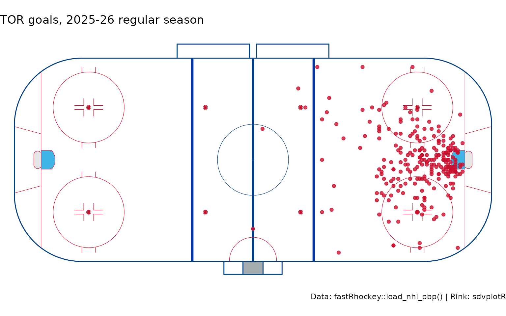
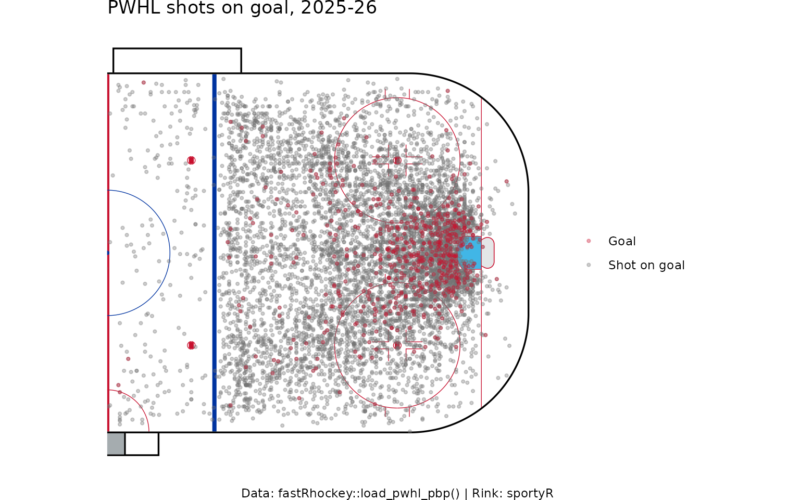
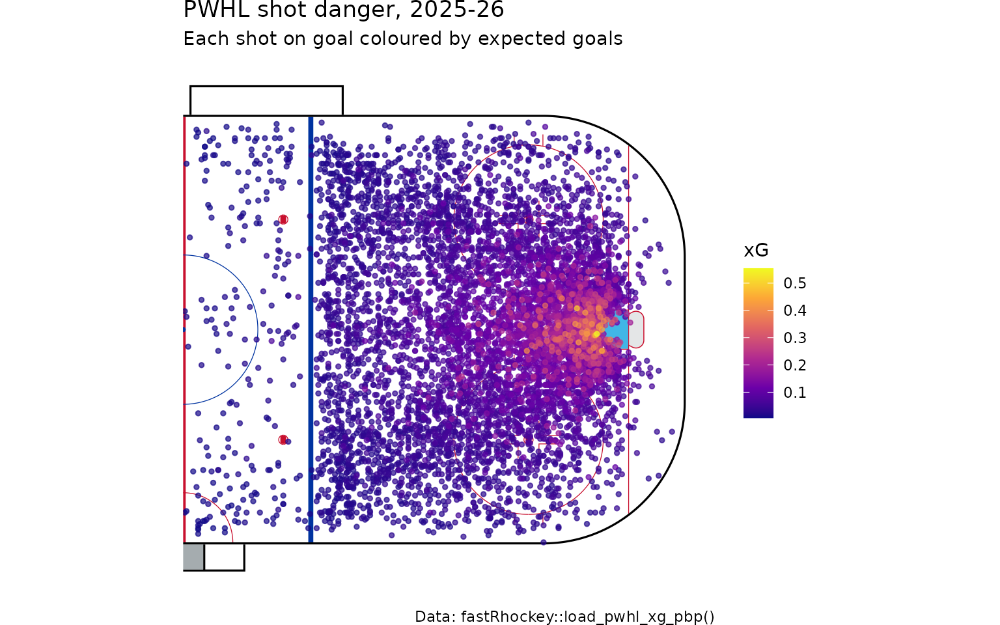
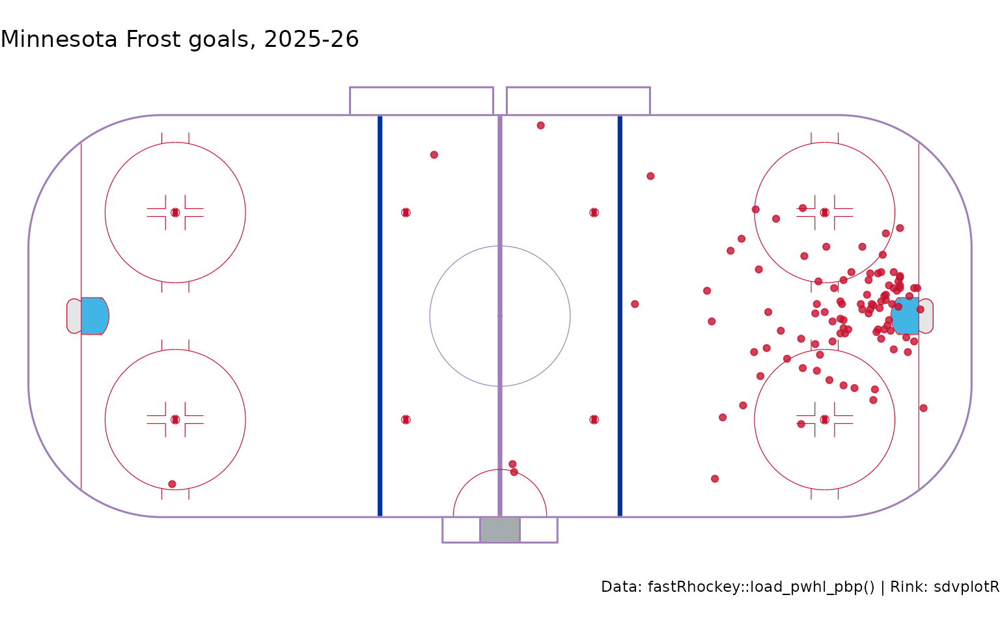

Hockey Shot Maps in R: NHL and PWHL Rink Plots with fastRhockey
Saiem Gilani, Ben Howell
Source:vignettes/articles/nhl-pwhl-rink-plots-shot-maps.Rmd
nhl-pwhl-rink-plots-shot-maps.RmdA shot map puts every shot where it happened on a drawing of
the rink. It is the quickest way to see whether a team gets to
the slot or settles for the perimeter, and with expected goals (xG)
sizing each point, how dangerous those chances were. This article draws
NHL and PWHL shot maps, xG shot charts and heatmaps from
fastRhockey play-by-play.
What you’ll learn
- Which coordinate columns to use for NHL and PWHL shots, and what frame they are in.
- How to draw a regulation rink with
sportyRand plot shots on it withggplot2. - How to draw team-coloured rinks with
sdvplotR. - How to size shots by xG and build a shot-density heatmap.
You need ggplot2 and sportyR
(install.packages(c("ggplot2", "sportyR"))), and optionally
sdvplotR
(pak::pak("sportsdataverse/sdvplotR")). None of them are
fastRhockey dependencies.
library(fastRhockey)
library(dplyr)
library(ggplot2)
# sdvplotR's rinks need sportyR 2.4.5 or later
sdv_ok <- requireNamespace("sdvplotR", quietly = TRUE) &&
utils::packageVersion("sportyR") >= "2.4.5"Which coordinates should I use?
Both leagues report locations in feet from centre
ice, the frame sportyR draws: x runs along the
length of the rink (the goal lines sit at x = ±89 ft), y across it.
| League | Columns | Frame |
|---|---|---|
| NHL |
x, y
|
As recorded; teams switch ends each period |
| NHL |
x_fixed, y_fixed
|
Intended: home team shooting right. See the caveat below |
| PWHL |
x_coord, y_coord
|
As recorded in the HockeyTech feed |
| PWHL |
x_coord_fixed, y_coord_fixed
|
Home team shooting right |
| PWHL |
x_coord_right, y_coord_right
|
Every team shooting right; NA when the event’s side is
unknown |
| PWHL |
x_coord_vertical, y_coord_vertical
|
Every team shooting up |
Coordinate caveats. NHL x_fixed /
y_fixed currently ignore the NHL API’s
homeTeamDefendingSide: every home-team event is placed at
x_fixed >= 0 and every away-team event at
x_fixed <= 0. Shots from the attacking zone plot
correctly, but shots or other events from a team’s own half are mirrored
into its attacking half. A fix is pending; the NHL
xG model article shows the effect. For the PWHL,
fastRhockey 1.1.0 corrected the derived coordinate columns,
and a republish of the PWHL release files with the corrected
x_coord columns is pending, so files loaded with
load_pwhl_pbp() may predate the fix.
How do I draw an NHL shot map?
Load a season and keep one team’s unblocked shots. To put every shot
in the same attacking end, flip the away team’s coordinates: away events
sit at x_fixed <= 0, so negating both coordinates moves
them to the right-hand net.
pbp <- load_nhl_pbp(seasons = 2026)
team_abbr <- "TOR"
nhl_shots <- pbp %>%
filter(
season_type == "R",
event_type %in% c("SHOT", "MISSED_SHOT", "GOAL"),
event_team_abbr == team_abbr,
!is.na(x_fixed), !is.na(y_fixed)
) %>%
mutate(
x_plot = if_else(event_team_abbr == home_abbr, x_fixed, -x_fixed),
y_plot = if_else(event_team_abbr == home_abbr, y_fixed, -y_fixed),
outcome = if_else(event_type == "GOAL", "Goal", "No goal")
)
nrow(nhl_shots)
#> [1] 3286sportyR::geom_hockey() returns a ggplot
with the rink already drawn, so you add layers with +.
display_range = "offense" shows the right half.
sportyR::geom_hockey("nhl", display_range = "offense") +
geom_point(
data = nhl_shots %>% arrange(desc(outcome)),
aes(x = x_plot, y = y_plot, colour = outcome),
alpha = 0.5, size = 1
) +
scale_colour_manual(values = c("Goal" = "#C8102E", "No goal" = "grey45"), name = NULL) +
labs(
title = paste(team_abbr, "unblocked shots, 2025-26 regular season"),
caption = "Data: fastRhockey::load_nhl_pbp() | Rink: sportyR"
)
How do I size shots by expected goals?
The xg column gives each unblocked shot’s goal
probability. Mapping it to point size makes high-danger chances stand
out. Here, one game:
one_game <- nhl_shots %>%
filter(game_id == min(game_id), !is.na(xg))
sportyR::geom_hockey("nhl", display_range = "offense") +
geom_point(
data = one_game,
aes(x = x_plot, y = y_plot, size = xg, fill = outcome),
shape = 21, colour = "white", alpha = 0.85
) +
scale_size_area(max_size = 10, name = "xG") +
scale_fill_manual(values = c("Goal" = "#C8102E", "No goal" = "#531896"), name = NULL) +
labs(
title = paste(team_abbr, "shots in game", unique(one_game$game_id)),
subtitle = paste0(round(sum(one_game$xg), 2), " xG, ",
sum(one_game$event_type == "GOAL"), " goals"),
caption = "Data: fastRhockey::load_nhl_pbp()"
)
How do I make a shot heatmap?
A heatmap shows where shots come from across many games. This one uses every 5v5 unblocked shot in the league, flipped to the same end, with filled density contours.
league_5v5 <- pbp %>%
filter(
season_type == "R", strength_state == "5v5",
event_type %in% c("SHOT", "MISSED_SHOT", "GOAL"),
!is.na(x_fixed), !is.na(y_fixed)
) %>%
mutate(
x_plot = if_else(event_team_abbr == home_abbr, x_fixed, -x_fixed),
y_plot = if_else(event_team_abbr == home_abbr, y_fixed, -y_fixed)
) %>%
filter(x_plot > 25)
sportyR::geom_hockey("nhl", display_range = "offense") +
stat_density_2d_filled(
data = league_5v5,
aes(x = x_plot, y = y_plot),
alpha = 0.65, bins = 9, contour_var = "ndensity"
) +
scale_fill_brewer(palette = "Purples", guide = "none") +
labs(
title = "Where NHL teams shoot from at 5v5, 2025-26",
subtitle = paste(format(nrow(league_5v5), big.mark = ","), "unblocked shots inside the offensive blue line"),
caption = "Data: fastRhockey::load_nhl_pbp()"
)
How do I draw team-coloured rinks with sdvplotR?
sdvplotR::sdv_surface() draws the same
sportyR rinks with SportsDataverse league keys, and with a
team it paints the centre line, centre circle and boards in
that team’s colours. The league keys for hockey include
"nhl", "pwhl", "ahl",
"ohl", "whl", "qmjhl",
"echl", "ushl", "iihf" and
"ncaa_mhockey" / "ncaa_whockey". It needs
sportyR 2.4.5 or later; this chunk only runs when that is
installed.
sdvplotR::sdv_surface("nhl", team = team_abbr) +
geom_point(
data = nhl_shots %>% filter(outcome == "Goal"),
aes(x = x_plot, y = y_plot),
colour = "#C8102E", size = 1.5, alpha = 0.8
) +
labs(
title = paste(team_abbr, "goals, 2025-26 regular season"),
caption = "Data: fastRhockey::load_nhl_pbp() | Rink: sdvplotR"
)
How do I draw a PWHL shot map?
The PWHL rink in sportyR is
geom_hockey("pwhl"). x_coord_right /
y_coord_right already put every team shooting right, so no
flipping is needed.
pwhl_pbp <- load_pwhl_pbp(seasons = 2026)
pwhl_shots <- pwhl_pbp %>%
filter(event %in% c("shot", "goal"), !is.na(x_coord_right), !is.na(y_coord_right)) %>%
mutate(
team = if_else(team_id == home_team_id, home_team, away_team),
outcome = if_else(event == "goal", "Goal", "Shot on goal")
)
count(pwhl_shots, team, sort = TRUE)
#> # A tibble: 8 × 2
#> team n
#> <chr> <int>
#> 1 Montréal Victoire 1230
#> 2 Minnesota Frost 1100
#> 3 Ottawa Charge 1066
#> 4 Boston Fleet 1037
#> 5 New York Sirens 947
#> 6 Seattle Torrent 899
#> 7 Toronto Sceptres 899
#> 8 Vancouver Goldeneyes 861
sportyR::geom_hockey("pwhl", display_range = "offense") +
geom_point(
data = pwhl_shots %>% arrange(desc(outcome)),
aes(x = x_coord_right, y = y_coord_right, colour = outcome),
alpha = 0.35, size = 0.8
) +
scale_colour_manual(values = c("Goal" = "#C8102E", "Shot on goal" = "grey45"), name = NULL) +
labs(
title = "PWHL shots on goal, 2025-26",
caption = "Data: fastRhockey::load_pwhl_pbp() | Rink: sportyR"
)
How do I plot PWHL expected goals?
load_pwhl_xg_pbp() returns one row per shot on goal with
an xg column. It carries the feed’s own
x_coord / y_coord, where teams attack either
end, and no derived columns. You can check against
shot_distance: measured to the net at x = +89 ft only about
half the shots match, but measured to the nearer net (using
abs(x_coord)) they all do.
pwhl_xg <- load_pwhl_xg_pbp(seasons = 2026)
pwhl_xg %>%
summarise(
match_net_at_plus_89 = mean(abs(sqrt((89 - x_coord)^2 + y_coord^2) - shot_distance) < 1),
match_nearer_net = mean(abs(sqrt((89 - abs(x_coord))^2 + y_coord^2) - shot_distance) < 1)
)
#> # A tibble: 1 × 2
#> match_net_at_plus_89 match_nearer_net
#> <dbl> <dbl>
#> 1 0.482 1So to put every shot in the right-hand end, take
abs(x_coord) and flip y_coord for the shots
you mirrored.
pwhl_xg_plot <- pwhl_xg %>%
mutate(x_plot = abs(x_coord), y_plot = if_else(x_coord < 0, -y_coord, y_coord)) %>%
arrange(xg)
sportyR::geom_hockey("pwhl", display_range = "offense") +
geom_point(
data = pwhl_xg_plot,
aes(x = x_plot, y = y_plot, colour = xg),
alpha = 0.7, size = 1
) +
scale_colour_viridis_c(option = "plasma", name = "xG") +
labs(
title = "PWHL shot danger, 2025-26",
subtitle = "Each shot on goal coloured by expected goals",
caption = "Data: fastRhockey::load_pwhl_xg_pbp()"
)
How the PWHL model works is covered in the PWHL expected goals article.
A team-coloured PWHL rink
pwhl_team <- "Minnesota Frost"
sdvplotR::sdv_surface("pwhl", team = pwhl_team) +
geom_point(
data = pwhl_shots %>% filter(team == pwhl_team, outcome == "Goal"),
aes(x = x_coord_right, y = y_coord_right),
colour = "#C8102E", size = 1.5, alpha = 0.8
) +
labs(
title = paste(pwhl_team, "goals, 2025-26"),
caption = "Data: fastRhockey::load_pwhl_pbp() | Rink: sdvplotR"
)
Other leagues
The AHL, OHL, WHL and QMJHL *_pbp() functions return the
same PWHL-style coordinate columns, and sportyR has rinks
for "ahl", "ohl", "qmjhl" and
more. These are live API calls, so the example is not run here.
ahl_game <- ahl_pbp(game_id = 1000093924)
sportyR::geom_hockey("ahl") +
geom_point(data = ahl_game, aes(x = x_coord_right, y = y_coord_right))Several European leagues publish shot locations too
(del_shots(), nl_shots(),
khl_shots(), liiga_shotmap()); see the European hockey leagues guide.
Their coordinate frames differ by provider, so check the ranges before
plotting.
Where to go next
- NHL expected goals (xG) model and PWHL expected goals (xG) model: what the xG sizes mean.
- Corsi, Fenwick and PDO in R: turn shot counts into shot-share metrics.
- PWHL and college hockey: more PWHL data.
- The sdvplotR NHL shot map recipe for logos and team colours.
- Getting started with fastRhockey, and the NHL Data Loaders and PWHL Data Loaders reference sections.